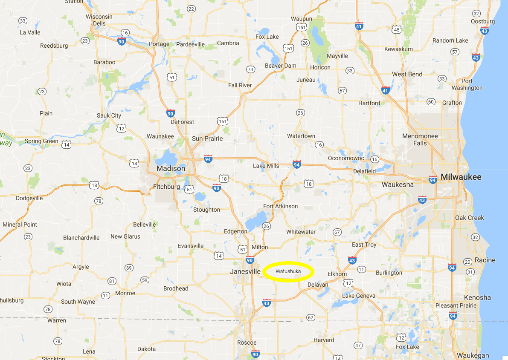

Watashuka

Overview
- Location: Watashuka is a small town located at the intersection of US-14 W and Hwy 11 W in Wisconsin. It lies approximately 54 miles southeast of Madison, 60 miles southwest of Milwaukee, and 100 miles northwest of Chicago. The town is also 20 miles from Lake Geneva.
- Tagline: "Quiet country life, for honest people."
- Population (1983):
- Total Region: ~10,359 (as of 1983)
- Within Town Limits: ~5,280
- Trend: Decline since 1969 due to closing of government projects.
- Demographics:
- Ethnicity and Diversity:
- Predominantly white, with a notable Native American population, primarily members of the Ho-Chunk tribe as well as a large Amish community.
- White: ~75%
- Native American (Ho-Chunk): ~15%
- African American: ~5%
- Asian: ~3%
- Hispanic/Latino: ~1%
- Other: ~1%
- Age: The town has an aging population, but the influx of students from Caroline College brings the average age down to below 27.
- Religion:
- Lutheran: ~50% (of total population)
- Amish: ~20%
- Non-Christian Faiths: ~15% (including Native American spiritual beliefs and other minor religions)
- Other Christian Denominations: ~10%
- Other: ~5%
- Ethnicity and Diversity:
- Economy
- Primary Industry: Education (Caroline College)
- Caroline College is the primary economic driver for Watashuka, employing a significant portion of its workforce and attracting substantial but mysterious funding.
- Impact:
- Direct employment: ~40% of the town's workforce
- Indirect employment through supporting businesses: ~30%
- Large public and private financial support, with an unknown source
- Impact:
- Caroline College is the primary economic driver for Watashuka, employing a significant portion of its workforce and attracting substantial but mysterious funding.
- Secondary Industry:
- Agriculture plays a vital role in Watashuka's economy, with dairy products and cranberries being the primary crops.
- Agriculture: Primary Products:
- Dairy: Milk and cheese
- Cranberries
- Impact: Supports ~15% of the town's workforce
- Tertiary Industries:
- Lumber and crafts contribute to Watashuka's economy by providing additional employment opportunities.
- Lumber: Supports ~5% of the workforce
- Primary Activities: Logging, sawmills, woodworking
- Crafts: Supports another ~3%
- Primary Activities: Artisan workshops, galleries, and small-scale manufacturing
- Primary Industry: Education (Caroline College)
- Recent Economic Developments/Challenges:
- Increased Funding for Caroline College: The recent influx of funds has helped revitalize the town but has also raised questions about its source
- Aging Population: Many farmers and craftspeople are approaching retirement age, which may lead to a skills gap in the future
Public History of Watashuka
- May 1856 – Founding of Prairieville Academy
- Prairieville Academy is established as a teacher-training school (normal school) to educate future educators. The academy becomes the heart of the town of Prairieville, which later becomes Watashuka. The academy was the dream of three educators Walter Mann, Eleazar Root and John W. Sterling. There dream was to work with the local Ho-Chunk people to bring forth a new era for the region. That dream is still alive today despite setbacks.
- Founding Members
- Walter Mann: German immigrant, artist, head founder of the academy
- Eleazar Root: Co-founder. Massachusetts school teacher, relocated
- John W. Sterling: Co-founder, English businessman, relocated
- Elias Haskins: Co-founder, local prominent cavalrymen
- Jonathan Whitmore: Co-founder, local esteemed teacher and theologian
- Sarah Johnson: Co-founder, local wealthy widow and philanthropist
- August 1860 – Destruction of Prairieville Academy
- The academy is destroyed during a violent conflict between the settlers and a rogue native tribe who attacked the school. During the attack many of the educators and founders were killed; only Eleazar Root and John Sterling survived. The academy burned down. Many blame local tensions with indigenous people on the attack. Most records from this time are lost, and it remains a tragic, but poorly understood, event in local history.
- September 1862 – Rebuilding of Prairieville School
- In the wake of the academy’s destruction, the Prairieville School is built to continue the region’s educational mission. Under the leadership of Eleazar Root and John W. Sterling the school thrives and grows as part of the effort to revitalize education in the region, attracting settlers to the area. Eleazar served as the school's first principal while John provided the financial and political support.
- Blizzard of 1888 - Humanitarian Aid
- After the Blizzard of 1888, large numbers of members of the Lutheran Church immigrate to the region. The first settlers arrive to provide humanitarian assistance but soon took to calling the region home.
- April 1895 – Caroline Religious Teaching College Founded
- Due to the influence of Lutheran immigrants, the Caroline Religious Teaching College is established, expanding the former school into a larger institution focused on religious education. The town of Prairieville is renamed Watashuka, believed to be derived from a misinterpreted Native American word symbolizing the area's different cultural influences.
- 1939-1945 – World War II Efforts
- Caroline Religious Teaching College contributes to the war effort, with local industry and students engaging in patriotic duties. The college’s science and engineering departments grow due to wartime funding. After the war, the college continues expanding its academic programs.
- 1945 – Caroline College Renamed
- The college is officially renamed Caroline College after WWII, reflecting its role as a modern liberal arts institution. The post-war years bring growth and new facilities, including Sister Sarah’s Medical Center, a teaching hospital for nursing and healthcare students.
- 1969 – Population Decline
- Watashuka’s population begins to decline in the late 1960s due to changing economic conditions; notably the closing of several government projects now deemed complete. People start leaving for larger cities like Madison and Milwaukee. The closing of some industries and the general economic downturn are seen as the reasons for this decline.
- 1983-Present – Present Day Watashuka
- Watashuka is a quiet rural town with Caroline College as its centerpiece. The town struggles economically, but the college brings new students and some level of vibrancy. Residents are largely unaware of any significant issues beyond normal small-town troubles.
Town of Watashuka Directory

{Feel: Small-town America, where even those better off economically are still considered disadvantaged by the standards of most of the country.}
Main Street
- The Press Newsstand
-
- Owner: Margaret "Marge" Wilkins, a no-nonsense woman in her late 50s.
- Description: Located on Main Street, The Press Newsstand has been a fixture in Watashuka for decades. Marge, the gruff but friendly owner, runs the small shop, which offers everything from local newspapers and national magazines to candy and cigarettes. Though small, the newsstand sees plenty of foot traffic, especially from old-timers and curious teenagers who like to pick up the latest gossip. Marge has a sharp eye for detail and always seems to know what’s going on in town.
-
- The Prairie Press
- Owner: Norm Habersham
- Established: 1932
- Description: The Prairie Press is the town’s local newspaper, and Norm has been its senior editor for over 30 years. The building is a modest, single-story office with a big front window displaying the latest headlines. Norm’s dedication to local journalism keeps the small office buzzing with activity despite the declining readership.
- Frozen Cow Burger Stand
- Owner: Mike and Ruth Garrison
- Description: Mike and Ruth run this nostalgic 1950s-style burger stand. The small, red-and-white building is a summertime favorite, offering burgers, shakes, and fries to locals and tourists. Mike is the talkative type, while Ruth ensures everything in the kitchen runs smoothly.
- The Prince: New & Used Books
- Owner: Dexter Colby
- Description: A charming, slightly dusty bookstore filled with a carefully curated selection of new and used books. The Prince is known for its quiet, cozy atmosphere, with shelves that seem to go on forever. Dexter Colby, the reserved and knowledgeable owner, has been running the shop for as long as anyone can remember. He has a reputation for always being able to find rare or hard-to-find books, making The Prince a favorite spot for local book lovers and collectors alike. The store’s resident cat, Poe, is often found napping in a sunbeam near the front window.
- Creek Music Store
- Owner: Tom Creek
- Description: A small, cramped store filled with violins, horns, guitars, records, and old music equipment. Tom is a gruff, middle-aged musician who loves to chat about the glory days of rock and roll. The store's walls are covered with band posters from decades past.
- Diane's VCR/TV/Typewriter Sales, Service and Movie Rental
- Owner: Diane Forrester
- Description: Diane’s shop is a catch-all for aging electronics, VCR rentals, and typewriter repairs. The cluttered storefront is an intimidating mess, but Diane’s expertise keeps her loyal customers coming back. She’s known to be friendly, but a bit of a technophobe when it comes to modern computers.
- Dance With Us! Studios
- Owner: Beth Carmichael
- Description: Beth runs this small dance studio with passion, teaching ballet, jazz, and tap to children and adults alike. The building is an old converted warehouse with wooden floors and mirrored walls. Beth is energetic and upbeat, always encouraging her students to do their best.
- The Hut (Electronics And Appliance)
- Owner: Jerry "Buzz" Horton
- Description: The Hut is a compact store crammed with everything from radios to refrigerators. Buzz is a gadget enthusiast and knows every feature of the appliances he sells. The store’s slightly disorganized appearance reflects Buzz’s chaotic but friendly personality.
- Watashuka Public Services Building (City Hall, Courthouse, jail, police, fire)
- Owner: Public Services
- Description: This imposing brick building serves as the town’s administrative hub. It’s home to the town’s municipal government, police, fire station, and courthouse. The staff is small but efficient, handling everything from zoning permits to civil disputes.
- Watashuka Post Office
- Owner: U.S. Postal Service (Postmaster: Linda Neal)
- Description: The post office is a simple, utilitarian building with a friendly atmosphere. Linda Neal, the town’s long-serving postmaster, oversees a small team who know most customers by name. The building also serves as a gathering spot for older residents picking up their mail.
- Bergmann’s Drugstore
- Owner: Henry Bergmann
- Description: A classic, small-town drugstore with a soda fountain counter that harks back to the 1950s. Henry is a kindly older man who has run the pharmacy for over 40 years. His gentle demeanor makes him a favorite among locals, who rely on his store for medications and sundries.
-
- Albert’s General Goods
- Owner: Albert “Al” Ralston
- Description: A catch-all general store selling everything from canned food to gardening tools. Al is a no-nonsense man in his 50s with a gruff exterior but a heart of gold. The store is packed with shelves of goods, and Al seems to know where everything is in his well-worn shop.
- Albert’s General Goods
Downtown Side Streets and Alleys
- Hanson's Hardware & Building Supplies (Closed, relocated)
- Freeman & Burke Attorneys at Law
- Owner: Sarah Freeman and Michael Burke
- Description: A small general practice law firm specializing in family law, real estate, and business contracts. Sarah and Michael are both serious and professional but maintain a friendly rapport with their clients. Their office is located in a charming converted house on a side street near the town center.
- Fixer’s Supply Co.
- Owner: Roy and Jean Fixer
- Description: Roy and Jean run this well-stocked hardware and building supply store. Known for their friendly service and practical advice, the couple has made Fixer’s a go-to spot for home improvement supplies. The large building on a side street still has an old-school charm, with its wood-paneled walls and hand-painted signage.
- Blue Heron Pub & Grill
- Owner: Paul Erickson
- Description: A classic pub with a comfortable, lived-in feel. The Blue Heron serves as a gathering place for locals, offering simple but tasty pub food. Paul is a laid-back owner who enjoys a good conversation with his patrons, often sitting at the bar during slow hours.
- Local Savings & Loan
- Description: The oldest financial institution in town, Local Savings & Loan has provided banking services to residents for generations. The building is an imposing 1930s structure located off Main Street.
- Watashuka Fitness & Recreation Center
- Owner: Jenny and Todd Mills
- Description: A modest fitness center with an attached community gym. Jenny and Todd are fitness enthusiasts who returned to Watashuka after college to open the center. They host fitness classes and recreational leagues for the town’s youth.
- SmileWorks Dental Care
- Owner: Dr. Ellie Chambers
- Description: A cheerful dental office with bright, kid-friendly décor. Dr. Ellie is a warm and caring dentist who returned to her hometown after dental school. The small building offers basic dental services with a personal touch.
- Eyes on Watashuka Optometry
- Owner: Dr. Michael Larson
- Description: A small, neat optometry office where Dr. Larson provides eye exams and glasses. He is soft-spoken but knowledgeable, making him a trusted figure in the community. The office has a quiet, calming atmosphere, with vintage eyeglass frames displayed as décor.
- Spin Cycle Laundry & Dry Cleaners
- Owner: Margaret and Earl Jacobs
- Description: A family-run laundromat with attached dry cleaning services. Margaret manages the dry cleaning side, while Earl runs the laundromat. The building is a little worn, but it’s a reliable place where locals come to clean their clothes or chat while waiting for the spin cycle to end.
- The Stand: Community Theatre
- Owner: Watashuka Theatre Group (Managed by Mary Cline)
- Description: A charming little community theater housed in a renovated church. Mary Cline is the passionate director of the theater group, which puts on performances throughout the year. The space is intimate, with just enough room for an enthusiastic crowd.
- Frontier Life History Center
- Owner: Watashuka Historical Society (Curator: Alan Graves)
- Description: A small museum dedicated to Watashuka’s pioneer history. Alan Graves, the curator, is an eccentric historian who loves sharing stories of the town’s early days. The building itself is an old cabin-like structure, restored to give visitors a sense of what life was like in the past.
- Watashuka WP (Water and Power)
- Description: A functional, no-nonsense utility building where the town’s water and power systems are managed. The employees are friendly but busy, ensuring that the town’s essential services run smoothly without interruption.
- All Saints Church of Watashuka (Lutheran Church)
- Head: Pastor Daniel Mueller
- Description: A modest but well-maintained Lutheran church with a tall steeple. Pastor Mueller is a kind and soft-spoken man who has served the congregation for over a decade. The church is a cornerstone of the community, hosting services, events, and local outreach programs.
- Bakers' Creamery & Bakery
- Owners: Clint and Amanda Baker
- Description: Located just off Main Street, this neighborhood grocery is known for its fresh-baked bread and local dairy products. Bakers' is a quiet spot where locals often run into one another after church for ice cream or cookies.
- Prairie Realty
- Owner: Jim Halushka
- Description: A local real estate office handling everything from farmland to residential properties. Prairie Realty has deep roots in Watashuka and plays a key role in selling historic homes and new development areas.
- River’s End Funeral Services
- Owner: The Hansen Family
- Description: A family-run establishment that provides personalized funeral services. Known for its caring staff and beautifully maintained grounds just outside the town center.
- Petals & Posies
- Owner: Stanley Romano
- Description: A quaint little flower shop nestled on one of the side streets off Main. Petals & Posies is beloved for its affordable, custom flower arrangements and its personal touch for every event.
- Which In The Wardrobe
- Owner: Rebecca Covell
- Description: A charming boutique offering affordable clothing and accessories for women and men. It's a place where locals can find everything from casual wear to outfits for special occasions.
Atmosphere:
- Watashuka’s Main Street is the lifeblood of the town, though it has seen better days. Lined with small businesses and family-owned shops, it exudes a nostalgic charm. During the day, it bustles with locals running errands and small talk flowing between shopkeepers and customers. The sounds of typewriters, local radio, and the clinking of glasses at the Blue Heron Pub fill the air. However, as the sun sets, Main Street takes on a different tone. Shadows seem to stretch longer here, and the empty streets echo with an eerie silence. The old brick buildings, now weathered and fading, whisper of past prosperity, but there’s a creeping unease.
- The side streets add to the town’s atmosphere of quiet decay, with narrow, cobbled roads leading to forgotten businesses like old law firms and shuttered hardware stores. These roads seem darker at night, and there’s a sense that they have stories of their own.
Northwest "Sterling Hills"
{Notes: State Route 89 marks the town's western border} {Feel: Most affluent, not wealthy but doing better than the rest of the town. }
-
- North High School
- Principal: Mr. Peter Clarke, a stern but fair educator who has been principal for over a decade.
- Description: As the only remaining high school in Watashuka, North High School is vital to the town’s educational system. The building is old, with some sections dating back to the 1950s, but it's well-maintained thanks to Principal Clarke's efforts. The mysterious destruction of South High School years ago in a boiler explosion haunts the faculty, with rumors still swirling about whether it was an accident or spiteful former students.
- North High School
- Jack's Surfer: Comics & Games
- Owner: Jack Hastings, an eccentric man in his 40s with a deep love for comics, tabletop role-playing games, and 80s pop culture.
- Description: Jack’s store is a haven for local teenagers and college students. Its walls are lined with comic books, old action figures, and game paraphernalia. Jack often hosts Dungeons & Dragons nights and has a hidden stash of rare comics and RPG sourcebooks for special customers. The store has a loyal following among the town’s youth, particularly those interested in metal music and counterculture, making it a target for the "Mothers Opposing Metal" group.
- Linda’s Beauty & Hair Salon
- Owner: Linda Novak, a no-nonsense hairdresser in her late 50s who has been cutting hair in Watashuka for as long as anyone can remember.
- Description: The salon is a small, cozy space with a few chairs, and Linda prides herself on knowing everyone's business. It’s where gossip spreads, and rumors about the oddities in Watashuka often start or grow here. Linda is friendly but doesn’t shy away from offering her opinion on anything. Her clients trust her judgment, making her an informal source of local news.
- Watashuka Bus Depot
- Manager: Frank Holloway, a quiet, middle-aged man who has worked at the depot for over 20 years.
- Description: The bus depot is a small, utilitarian building that serves as a hub for both passengers and cargo deliveries. The depot connects Watashuka to nearby cities, but the service has seen a decline over the years due to the shrinking population.
- Homes of Caroline College Faculty and Staff
- Residents: Various faculty and staff members from Caroline College, with a mix of younger professionals and older professors who have lived in Watashuka for decades.
- Description: The homes in this area are modest but well-kept, mostly occupied by college faculty who commute to the campus. The homes here are older, with a sense of quiet respectability, but at night, the streets can feel eerie, as though those that stroll the quiet streets are always being watched.
- Homes of Government Staff
- Residents: Various staff connected to Project Caroline and other secretive government initiatives.
- Description: On the surface, these homes seem perfectly ordinary, blending in with the rest of the northwest. However, these government workers are often more reclusive, keeping their personal lives secret due to work regulations. It's not uncommon for new families to move in suddenly without much introduction, and neighbors have learned not to ask too many questions.
Outside of the town limits to the Northwest
- Caroline College
Atmosphere
- Sterling Hills is a peaceful and affluent part of Watashuka, home to Caroline College faculty, government staff, and some of the town’s more well-off residents. The streets are lined with mature trees and stately homes, giving the neighborhood an air of quiet respectability. On the surface, Sterling Hills feels safe and orderly, but there’s an underlying tension among the residents, particularly those with ties to the college or government projects.
- Caroline College’s campus stands apart from the town of Watashuka, its stately buildings and green lawns giving it an air of academia and history. A distance of several miles, through dense woods, separate the school from its town.
Northeast "Farmer's Ridge"
{Feel: Very rural, farm focused}
- Hanson’s Hardware & Building Supplies (Relocated from Downtown)
- Owner: Jack Hanson
- Description: After closing the downtown location, Jack Hanson moved his hardware store to the northeast of town, closer to the rural community it serves. Jack is a gruff but helpful man, always willing to offer advice on home repairs and farming tools.
- Watashuka Co-Op Farming Supplies
- Owner: Co-Operative (Manager: Fred Yoder)
- Description: A bustling co-op that provides farming supplies to local dairy farmers and crop growers. Fred Yoder, a practical man with deep roots in the Amish community, manages the co-op. The building is large and utilitarian, but always busy.
- Yoder’s Amish Goods Market
- Owner: The Yoder Family
- Description: A rustic market selling handmade Amish goods, including baked items, furniture, and crafts. The Yoders are a quiet but friendly family, well-known for their traditional methods and quality products. The market is a charming wooden structure with a welcoming atmosphere.
Outside of the town limits to the Northeast
- Amish Community Border
- Watashuka Farmers
Atmosphere
- Farmer’s Ridge is the agricultural heart of Watashuka, where life revolves around the seasons, livestock, and the land. The area feels timeless, with endless rows of crops and farmhouses dotting the landscape. There’s a peacefulness here, but also a sense of isolation. The farmers are proud and self-reliant. The Amish community nearby maintains a watchful eye while keeping their deeper knowledge to themselves.
- The Amish lands to the northeast of Watashuka are serene and picturesque, with rolling hills, wide fields, and carefully maintained farms that seem untouched by time. Horse-drawn buggies travel along dirt roads, and the simple wooden homes and barns give the area a peaceful, pastoral quality. The air smells of fresh-cut hay and wood smoke, and the rhythmic sound of hammering and livestock creates a sense of calm industry. Life here feels slower and more purposeful, far removed from the chaos that pervades the rest of the town.
Southwest "Prairie View Downs"
{Notes: Corner of State Route 89 and State Route 11 marks the town boarder} {Notes: Boarder of Ho-Chunk native people's land (further to the south west)} {Feel: Very rural, keep to themselves type people}
- K Squared Gas Station
- Owner: Kevin and Kyle Kilgore, twin brothers who run the station.
- Description: Located on the way out of town, heading towards Caroline College, K Squared is more than just a rural gas station. It serves as a morning pit stop for students and faculty on their way to class. In addition to fuel, the store offers coffee, breakfast snacks, and basic supplies. The Kilgore brothers are known for their friendly banter and keeping tabs on the local happenings.
-
- Annie's Animal and Game Processing Plant
- Owner: Annette "Annie" Martin, a tough, no-nonsense woman in her early 60s.
- Description: Annie’s processing plant serves the rural hunting and farming communities around Watashuka. She processes everything from livestock to wild game for local farmers and hunters. The plant, located just off State Route 89, is a sprawling complex that smells of blood and meat. Annie has worked here her whole life.
- Annie's Animal and Game Processing Plant
- Streamwader's Hunting Goods
- Owner: Jim Watson, a grizzled Vietnam War vet and experienced outdoorsman.
- Description: Streamwader’s shop is a small, rugged building filled with hunting rifles, bows, traps, and other outdoor equipment. Jim has lived in Watashuka for decades and loves to share his stories with the younger generation of hunters, though his more chilling tales are often dismissed as the ramblings of an old soldier.
- Rural Communities
- Residents: Dairy farmers, crop growers, and livestock ranchers.
- Description: The sprawling farmland to the southwest is home to families who have lived in Watashuka for generations. These farmers are mostly self-sufficient, and many have an unspoken rule to mind their own business.
- Ho-Chunk Information Center
- Curator: Mary Whitecloud, a knowledgeable and reserved Ho-Chunk woman in her late 40s.
- Description: This small center serves as an educational hub about the Ho-Chunk people, their history, and their culture. The building is humble but welcoming, with displays about Ho-Chunk traditions and artifacts. Mary runs the center, offering tours and answering questions from visitors.
Outside of the town limits to the Southwest
- The Wet Spot
- Owner: “Big” Tony D’Amato, a business-savvy man in his 50s.
- Description: Despite its seedy reputation, The Wet Spot is a popular hangout for college students, known for cheap drinks and live music. The club, located just outside town limits near Lake Mary. Tony, the owner, loves catering to the college crowd, offering student discounts and hosting wild theme nights. Locals mostly avoid the place, but for Caroline College students, it’s a spot to unwind away from prying eyes. Though rumors swirl about shady dealings, Tony keeps a tight lid on any trouble, preferring to keep things legal—and profitable.
- Border of Ho-Chunk Native People's Lands
Atmosphere
- The Downs are a mix of sprawling farmlands and quiet, isolated properties. The air is thick with the smell of fresh hay and the sound of distant tractors, creating a rural, down-to-earth feel. It’s a hard-working community where people keep to themselves and don't ask too many questions.
- The Ho-Chunk lands are sacred and revered, with a strong connection to the spiritual. The area is quiet, peaceful, and somewhat eerie. The trees here seem older, and the wind carries with it the weight of ancient history. Many in Watashuka avoid this part of the land.
South East "Lakeview"
{Feel: Working Class mixes with impoverished housing and abandoned lots} {Note: You cannot see the lake from the neighborhood.}
- Lakeview Elementary And Jr. High School
- Owner/Principal: Principal Nancy Doyle, a stern yet caring woman who has run the school for over 20 years, is known for her no-nonsense attitude.
- Description: The school serves the local working-class families of Watashuka. It's an aging building, with outdated facilities, but a dedicated staff. Known for its tight-knit community, teachers often go above and beyond to help students who face difficult circumstances at home.
- Mackie Recreational Park
- Caretaker: Gary “Old Man” Dutton, a retiree who volunteers his time to maintain the park, always seen with his trusty rake in hand.
- Description: Once a bustling park for families, Mackie Recreational Park now has overgrown fields and outdated playground equipment. Despite its wear, it’s a gathering place for children after school and hosts occasional community events.
- Berg Farm House - on empty lot on 14th St.
- Owner: Unknown and in dispute. The Watashuka Historical Society is attempting to take ownership but they lack the funds.
- Description: The oldest surviving building in the region, the Berg Farm House was built before 1876. This is known from a surviving watercolor painting dated from 1876. It is suspected that the structure may have an older origin. The building is currently abandoned and opinions are mixed as to whether the town should restore it or demolish it.
- 19th Street Apartments
- Owner: The elusive Mr. Ronald Maddox, a local landlord notorious for neglecting property repairs while still demanding rent on time.
- Description: A low-income apartment complex filled with diverse residents. The building is run down, with peeling paint and unreliable plumbing, but it's home for many who can’t afford better housing.
- Jackie's East Side Pizza
- Owner: Jackie Leone, a friendly, middle-aged man with a deep love for pizza (even if he cannot eat it himself due to lactose intolerance). He’s known for giving free slices to kids who can't afford them in exchange for odd jobs (washing dishes, cleaning, etc.).
- Description: Known for its greasy, but delicious pizza, Jackie’s East Side Pizza is a local favorite for a quick bite. The interior is simple and clean, with checkered tablecloths and neon signs that have seen better days.
- Dominick's Grocery
- Owner: Dominick Santoro
- Description: The largest grocery store in the region, it is a family owned store with shelves that are always stocked with local produce and staples. Dominick's caught between the norms of a simpler time and the pull of the modern world. In a struggle to stave off outside commercial interests, the pull of the modern is winning.
- Cobblers & Threads
- Owner: Betty Whitehall, a no-nonsense seamstress, and her brother Frank Whitehall, the cobbler. They’ve run the shop together for decades, known for their efficient teamwork.
- Description: A dual-purpose shop offering both shoe repair and clothing alterations. Known for its fast service, it’s a favorite for residents who want to make their clothes and shoes last a little longer.
- Tony’s Barber Shop
- Owner: 'Little' Tony McKivett
- Description: A classic barber shop where the men of Watashuka gather for haircuts and town gossip. Tony’s father ran the shop before him, and Tony knows just about everyone’s secrets. The shop has old-fashioned leather chairs and a timeless feel.
- Nickel Quick-Mart
- Owner: Rick Graves, a friendly, overworked man who runs the store mostly on his own. He’s known for always greeting customers with a smile despite the long hours.
- Description: A small, rundown convenience store that carries everything from snacks to household items. It’s open late and frequented by everyone in the neighborhood for last-minute purchases.
- Metal Circle Apartments
- Owner: Martha Hale, a widow who inherited the building from her late husband and struggles to keep it maintained on her own.
- Description: A small apartment complex, known for its circular layout which follows what was once the boundary Prairieville. The apartments are affordable but come with frequent maintenance issues. It's popular with students from Caroline College looking for off campus housing.
-
- Anderson's Shady Tree Mechanics and Auto Sales
- Owner: Jed Anderson, a gruff but likable mechanic who’s been fixing cars in Watashuka for as long as anyone can remember.
- Description: A combination auto repair shop and used car dealership, located just on the road out of town. It’s known for doing quick, cheap repairs and offering used cars at prices that make people suspicious. The junk yard in the fields behind the shop are expansive.
- Anderson's Shady Tree Mechanics and Auto Sales
- Mid-City Apartments
- Owner: Marie Jennings, a tough but fair property manager who tries to do what she can with the limited resources she has.
- Description: A crumbling, multi-story apartment building. The elevator is always broken, and the halls are filled with peeling wallpaper. Despite this, it’s always full of tenants; especially the town's aging population who do not have family to stay with.
- 3 Ball Pawn
- Owner: Roy “Three Ball” Smith, a shrewd businessman who claims he can sell anything.
- Description: A dark, cramped pawn shop filled with odd trinkets, used electronics, and questionable items. The shop is always busy, with people haggling over prices. It has frequently in trouble with local law enforcement for selling items with a 'questionable' past.
- PR’s (Poor Richard’s) Bar
- Owner: Richard “Rich” Mulligan, a man whose nickname, Poor Richard, comes from his tendency to drink away his own profits.
- Description: A local dive bar with a dimly lit interior, cheap drinks, and live music that is popular with college students.
- Cornerstone Center (Community Center)
- Manager: Clara Williams, a passionate social worker who does her best to keep the center running with limited funds.
- Description: A rundown community center that offers free classes and activities for local kids and adults. The building is in desperate need of repairs, but it’s still a hub for the neighborhood.
- Watashuka Chamber of Commerce
- Head: Alan Peterson, an optimistic businessman who believes Watashuka’s best days are still ahead, despite the overwhelming evidence to the contrary.
- Description: The town’s business association, housed in a small, non-descript building. The Chamber tries to encourage economic development, but the town’s declining fortunes make it an uphill battle.
- Peach Street Library
- Librarian: Sly Coolstein
- The Peach Street Library is the only public library in town. While the number of volumes available are limited, they do cover a wide range of topics not usually found in a rural town library. This is due to the donations of enthusiasts in the region.
- Garrison & Sons Law Office
- Owner: Jack Garrison and Sons (Ted and Wayne)
- Description: A family-run law office, Garrison & Sons handles wills, property disputes, and other local legal matters. Jack is semi-retired, leaving much of the day-to-day work to his sons, Ted and Wayne. The office is a small, simple building with old wooden floors and dusty bookshelves.
Outside the town limits to the Southeast: "Lakeview Shores"
{Feel: Resort attractions that have seen better days.}
Once a thriving vacation destination, Lakeview Shores has seen better days. Nestled along the edge of Lake "View," this aging resort area was once popular with families seeking outdoor recreation, but a combination of economic decline and neglect has left it in a state of disrepair. The area is now frequented by locals, campers, and the occasional nostalgic visitor, though the glory days are long gone.
- Sit n' Eat Diner and Motel
- Owner: Doris Larkin, a friendly but world-weary woman in her 60s who runs the place single-handedly.
- Description: This diner and attached motel are classic roadside Americana, with faded neon signs and a cracked parking lot. Once a bustling stop for tourists, the rooms are now sparsely occupied, and the diner serves mostly local regulars. Despite the wear and tear, Doris keeps the food hot and the coffee flowing. The motel rooms are clean but dated, with décor that hasn’t been updated since the 1970s.
- The Lake (Public House)
- Owner: Tom "Big T" Lawson, a burly man in his 50s with a passion for local history and cheap beer.
- Description: The Lake is a weathered lakeside tavern that once thrived on summer tourism. Now, it’s mostly filled with locals looking for a cheap drink. The tavern has a large deck overlooking the water, though the view is often shrouded in mist, adding an eerie ambiance. Inside, fishing trophies and old photos of Lakeview’s heyday decorate the walls. Big T is always ready to share stories of the lake’s supposed mysteries, though most patrons dismiss them as drunken ramblings. It is almost never visited by college students and is considered a 'locals only' establishment. "Its the only place in town where a good Lutheran can get a drink."
- Lakeside RV Park & Campground
- Owner: Marty and Sue Briggs, an aging couple who have managed the site for over 30 years.
- Description: The RV park and campground sit on the fringes of Lakeview Shores, offering both short-term and long-term stays. Once a vibrant vacation spot, the campground now attracts a more transient crowd, with only a handful of RVs and tents set up at any given time. The facilities are outdated but functional, and the lake’s shoreline is overgrown with weeds.
- All Wet Market & Deli
- Owner: Jane and Bob Wheeler, a friendly couple in their late 40s trying to revive the area.
- Description: This small market and deli caters to the remaining campers, RV dwellers, and the few vacationers that still trickle in. Despite the area’s decline, Jane and Bob are optimistic and do their best to offer fresh sandwiches and snacks, even though their stock sometimes sits for weeks before being sold. The building is quaint but worn, with a cheery atmosphere inside.
- Lakeview Lakeside Fun Center (Mini Golf & Arcade)
- Owner: Dave and Cathy Arnold, a laid-back couple in their 50s who refuse to let the place die.
- Description: The Lakeview Fun Center was once a bustling family attraction, complete with mini golf, an arcade, and boat rentals. These days, the mini golf course is overgrown, and most of the arcade machines are out of order, save for a few that still function—barely. Dave and Cathy are known for their easygoing attitudes, keeping the place open even if it only gets a few visitors a day.
- The Playhouse on the Lake
- Owner: Nancy Bright, a former actress who settled down after her career ended.
- Description: This small theater once hosted local plays, musicals, and live performances for vacationers. Now, it’s mostly abandoned, with only a few amateur productions each year. Nancy, an eccentric woman with a flair for the dramatic, still dreams of restoring the theater to its former glory, though few share her enthusiasm. The Playhouse is said to be haunted by the ghost of a former actor who died during a performance, but Nancy waves off such rumors with a smile.
- The View New Age Shop
- Owner: Lucinda "Luce" Moore, a free-spirited woman in her 40s with a deep interest in the supernatural.
- Description: This small, quirky shop offers crystals, tarot readings, and other New Age paraphernalia. Luce is one of the few people in Lakeview Shores who embraces the strange energy of the area, and she’s always ready to discuss local legends or offer advice on warding off spirits. The shop is popular with college students and visitors interested in the occult, though locals are often skeptical of Luce’s claims about the lake’s mystical powers. She’s known to host moonlit gatherings by the lake, though only a few daring souls ever attend.
Atmosphere:
- Despite its decline, Lakeview Shores holds a certain charm for those who appreciate faded beauty and quiet reflection. The lake, once a source of joy, now seems shrouded in fog and whispers of the unknown. Once a bustling summer retreat, Lakeview Shores has an air of forgotten grandeur. The overgrown paths, weathered motels, and silent campgrounds hint at better days, but now the area feels haunted by time. Despite its decline, Lakeview Shores retains a nostalgic charm for those who remember its heyday.
- Lakeview is a working-class neighborhood with a sense of faded optimism. Many of its residents are struggling to make ends meet, and the area’s rundown houses and overgrown lots are signs of its slow decline. Yet, there’s a strong community spirit here, where neighbors help each other out, and children still play in the streets. The boarded-up windows and crumbling facades tell the story of a once-thriving part of town, but the people hold onto hope that better days are coming.